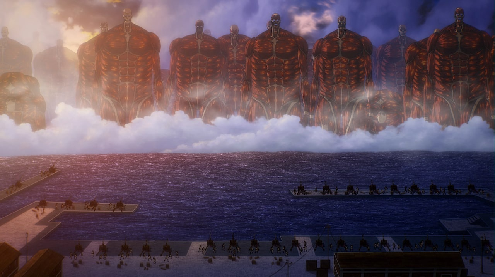
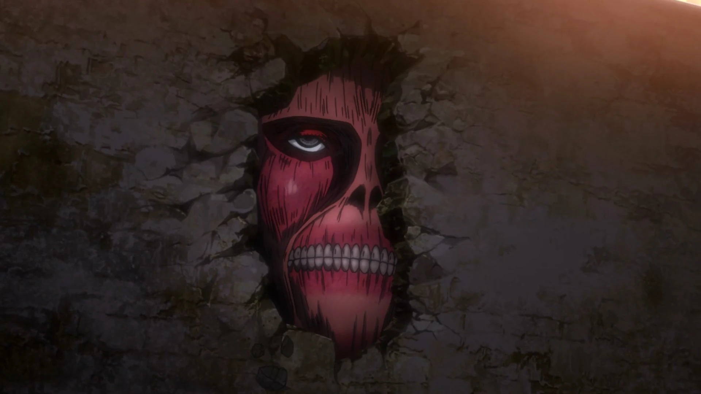

Все титаны в аниме "Атака титанов" делятся на разумных и неразумных.
Разумные титаны
Девять Титанов (九つの巨人 Kokonotsu no Kyojin?) — это сила «Девяти Титанов», передаваемая в течение последних 2000 лет среди народа Имир после смерти Имир Фриц до смерти Эрена Йегера. Каждый из девяти титанов имеет своё имя и отличительную способность. В их число входят:
- Атакующий титан (нынешний владелец - Эрен Йегер)
- Бронированный титан (нынешний владелец - Райнер Браун)
- Колоссальный титан (нынешний владелец - Армин Арлерт)
- Женская особь (нынешний владелец - Энни Леонхард)
- Титан Молотоборец (нынешний владелец - Эрен Йегер)
- Зубастый титан (нынешний владелец - Фалько Грайс)
- Звероподобный титан (нынешний владелец - Зик Йегер)
- Титан Перевозчик (нынешний владелец - Пик Фингер)
- Прародитель (нынешний владелец - Эрен Йегер)
Неразумные титаны
Все титаны когда-то были людьми, а точнее – элдийцами. Обычные титаны похожи на гигантских обнаженных людей с измененными пропорциями. Они могут быть от 3 до 15 метров в высоту. Неразумные титаны не обладают интеллектом и охотятся только на людей. У них нет пищеварительной системы, так что людей они поедают не для пропитания. Охотиться они могут только днём, когда светит солнце, в ночное время они безвредны. Неразумные титаны редко ведут себя необычно. Они нападают на человека, как только его видят, а в остальное время просто бродят за стенами в поисках людей. Но есть несколько неразумных титанов, которые выбиваются из общей массы. Таких титанов называют девиантами. Для того, чтобы неразумный титан вернулся в человечкский облик, ему нужно съесть человека, обладающего силой одного из девяти титанов.
Говорящий титан
Молодая девушка с короткими светлыми волосами, серыми глазами и длинными ресницами, являлась членом культа Имир Фриц, прежде чем была превращена в титана после обнаружения группы органами общественной безопасности. Во время 34—ой экспедиции за стены титан находит Ильзу Лангнер и загоняет её в угол у дерева. Но вместо того, чтобы убить, он какое-то время приостально смотрит на девушку, а после пытается с ней заговорить. Титан обращается к Ильзе «леди Имир», а после и вовсе кланяется. Когда же она задаёт вопросы о его происхождении и целях, титан начинает нервничать, а после всё же убивает Лангнер, раздавив голову своими челюстями. После, предположительно из уважения к «леди Имир», он оставляет тело Ильзы в дупле того самого дерева. Позже титан был найден Ханджи во время 49—ой экспедиции и был убит Леви при попытки сбежать в лес.
Род Райсс
Род Райсс - глава династии Рейсс, истинный правитель человечества. В форме титана Род Рейсс вдвое превосходит по размерам Колоссального. Кроме того, он является либо аномальной формой неразумного титана, либо преследует неизвестные мотивы. Если бы Род Рейсс в форме титана мог встать в полный рост, его рост составил бы около 170 метров, но из за своей огромной массы он не может стоять на ногах, поэтому он смог достичь отметки лишь в 120 метров, опершись руками об Стену

Титаны в стене
Титаны в Стене являются аномальными титанами, внешне похожими на Колоссального. Они обладали способностью к кристаллизации, с помощью которой и были возведены три стены, защищающие Парадиз от титанов.

Их существование было обнаружено, когда один титан попытался взобраться на стену Сина, чтобы сбежать от Эрена и Разведкорпуса.
